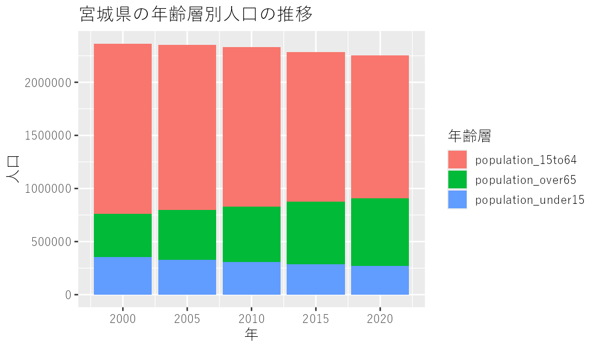

付録
付録C 宿題と作例
各章の宿題と、その作例です。答えは一つではないので、自分のコードが違っていても、同じ結果が出ていれば正解です。
1．若者率のランキング（05章）
人口に占める若者の割合を示す列を作って、「若者率が高い自治体」「低い自治体」それぞれのランキングを作りなさい。
df2020 %>%
select(地域,
`A1101_総人口【人】`,
`A1301_15歳未満人口【人】`) %>%
rename(region = 地域,
population = `A1101_総人口【人】`,
population_under15 = `A1301_15歳未満人口【人】`) %>%
mutate(rate_young = population_under15 * 100 / population) %>%
arrange(desc(rate_young))# A tibble: 1,916 × 3
region population rate_young
<chr> <dbl> <dbl>
1 鹿児島県 三島村 405 23.5
2 福岡県 新宮町 32927 20.7
3 沖縄県 南風原町 40440 20.2
4 沖縄県 宜野座村 5833 19.8
5 沖縄県 豊見城市 64612 19.4
6 鹿児島県 十島村 740 19.3
7 沖縄県 八重瀬町 30941 19.3
8 沖縄県 渡嘉敷村 718 19.2
9 沖縄県 与那原町 19695 19.0
10 三重県 朝日町 11021 18.8
# ℹ 1,906 more rows低い順に見たければ、最後の行を arrange(rate_young) に変えるだけです。
トップは鹿児島県三島村（人口405人）。2位が福岡県新宮町で、そのあとは沖縄県の町村がずらりと並びます。沖縄が強いのは予想どおりでも、三島村と新宮町はなぜなのか。 ここが記者の出発点です。人口405人の村で若者率が23.5％というのは、実数でいえば95人ほど。分母が小さいところは、ちょっとした変化で率が跳ねます。率のランキングを作ったら、必ず実数も並べて見る。 上のコードで population を残しているのは、そのためです。
低いほうは、高齢化率のランキングとほぼ裏返しになるはずです。なぜ裏返しにならない自治体があるのか——そこに目をつけると面白いかもしれません。生産年齢人口の比率が極端に高い、つまり働く人だけがいる場所、ということです。
2．都道府県別の高齢化率ランキング（07章）
都道府県別に高齢化率を計算し、ランキングを作りなさい。
df2020_pref %>%
mutate(rate_aged = pref_population_over65 * 100 / pref_population) %>%
arrange(desc(rate_aged))# A tibble: 47 × 3
prefecture pref_population rate_aged
<chr> <dbl> <dbl>
1 秋田県 959502 37.3
2 高知県 691527 35.0
3 山口県 1342059 34.3
4 島根県 671126 34.0
5 山形県 1068027 33.7
6 岩手県 1210534 33.4
7 青森県 1237984 33.4
8 徳島県 719559 33.1
9 和歌山県 922584 33.1
10 大分県 1123852 32.9
# ℹ 37 more rows秋田県が37.3％で1位。高知、山口、島根と続きます。
group_by と summarize で足し上げてから、mutate で割り算する。この順番が大事です。 先に市区町村ごとの高齢化率を出して、それを都道府県ごとに平均してしまうと、答えが変わります（人口1000人の村と人口100万人の市が、同じ重みで平均されてしまうからです）。
いわゆる「平均の平均」問題です。比率を集計するときは、分子と分母をそれぞれ足し上げてから割る。これは覚えておいてください。
3．ExcelファイルもふくめてまとめてbindRowsする（10章）
2000年と2005年の人口データも読み込んでください。csvじゃなくてexcelファイルだったりするので、これまでに使っていない関数を使って読み込む必要があります。また、bind_rows() 関数で合体させようとしても、ふつうにやるとエラーが出ます。原因を考えて、できれば解決してみてください。
答えは10章の本文にあります。読み込みは read_excel()（readxlパッケージ）、エラーの原因はデータ型の不一致、解決は全部いったん文字列として読み込むこと。
library(readxl)
df <- bind_rows(read_csv("data/人口データ2020.csv", skip = 8) %>%
mutate(across(everything(), as.character)),
read_csv("data/人口データ2015.csv", skip = 2) %>%
mutate(across(everything(), as.character)),
read_csv("data/人口データ2010.csv", skip = 5,
locale = locale(encoding = "CP932")) %>%
mutate(across(everything(), as.character)),
read_excel("data/人口データ2005.xls", skip = 8) %>%
mutate(across(everything(), as.character)),
read_excel("data/人口データ2000.xlsx", skip = 8) %>%
mutate(across(everything(), as.character)))4．pivotで往復する（09章）
df_simpleのデータフレームについて、regionの列を「都道府県名」「市町村名」「区名」に分けたうえで、まずpivot_widerをかけ、それをまたpivot_longerで元に戻してください。
# まず3つの列に分ける
df_split <- df_simple %>%
mutate(prefecture = str_split_i(region, " ", 1),
municipality = str_split_i(region, " ", 2),
ward = str_split_i(region, " ", 3)) %>%
select(-region)
# 横長にする
df_split_wide <- df_split %>%
pivot_wider(names_from = year,
values_from = population)
# 縦長に戻す
df_split_wide %>%
pivot_longer(cols = -c(prefecture, municipality, ward),
names_to = "year",
values_to = "population")cols = -c(...) のところで、縦長にしたくない列（＝地名の列）を3つとも除くのがポイントです。ここを間違えると、地名まで縦長にされて意味不明なデータになります。
5．年と自治体の両方で突合する（11章）
複数の年のデータを含んだ労働力人口のcsvを読み込んで、df_simple と「年度」「自治体」に基づいて突合してください。
まず読み込んで、中身を見てみます。
working_population <- read_csv("data/労働人口データ.csv", skip = 8) %>%
rename(year = 調査年,
code = `地域 コード`,
primary = `F2201_第1次産業就業者数【人】`,
secondary = `F2211_第2次産業就業者数【人】`,
tertiary = `F2221_第3次産業就業者数【人】`)
working_population %>%
select(year, code, primary, secondary)# A tibble: 9,580 × 4
year code primary secondary
<chr> <chr> <chr> <chr>
1 2020年度 01100 3,983 115,924
2 2020年度 01101 303 8,534
3 2020年度 01102 674 19,376
4 2020年度 01103 545 18,169
# ℹ 9,576 more rowsここで手が止まってほしいところです。primary が <chr>、つまり文字列になっています。中身を見ると 3,983 と、桁区切りのカンマが入っている。
というわけで、数値に直します。ここで as.double() を使ってはいけません。
working_population <- working_population %>%
select(year, code, primary, secondary, tertiary) %>%
mutate(year = as.double(str_sub(year, 1, 4)),
across(c(primary, secondary, tertiary), parse_number))
df_simple %>%
left_join(working_population,
by = join_by(year, code))parse_number() は、カンマや単位のような余計な文字を捨てて数字だけを取り出してくれる関数です（readrパッケージに入っています）。as.double("3,983") はNAになりますが、parse_number("3,983") はちゃんと3983になります。
とっかかりにする列が2つになるので、join_by(year, code) とコンマで並べます。「年が同じで、かつ自治体コードも同じ行」をくっつける、という意味です。
# A tibble: 9,580 × 5
year region population primary tertiary
<dbl> <chr> <dbl> <dbl> <dbl>
1 2020 北海道 札幌市 1973395 3983 697967
2 2020 北海道 札幌市 中央区 248680 303 91594
3 2020 北海道 札幌市 北区 289323 674 99453
4 2020 北海道 札幌市 東区 265379 545 91495
5 2020 北海道 札幌市 白石区 211835 344 75576
# ℹ 9,575 more rows6．宮城県の年齢層別人口（13章）
data/主な都道府県の人口.csv をもとに、宮城県の年齢層別人口の推移を示すグラフを作ってください。five_pref %>%
filter(prefecture == "宮城県") %>%
select(-population) %>%
pivot_longer(cols = -c(year, prefecture),
names_to = "category",
values_to = "value") %>%
ggplot() +
geom_col(aes(year, value, fill = category)) +
labs(title = "宮城県の年齢層別人口の推移",
x = "年",
y = "人口",
fill = "年齢層")
手順は3つです。
filter()で宮城県だけに絞るselect(-population)で総人口の列を捨てる（二重計上を防ぐ）pivot_longer()で年齢層を1つの列にまとめる
geom_col(aes(year, value, fill = category)) のように x = y = を省いても動きます。aes() は最初の2つを自動的にxとyとして受け取るからです。ただ、慣れないうちは省かないほうが読み間違えません。
発展。 凡例が population_15to64 のような英語のままだと不親切です。日本語に直したければ、pivotのあとに変換します。
mutate(category = case_when(category == "population_under15" ~ "15歳未満",
category == "population_15to64" ~ "15〜64歳",
category == "population_over65" ~ "65歳以上")) %>%さらに、積み上げの順番を上から「65歳以上」にしたければ、factor() で順番を指定します。
mutate(category = factor(category,
levels = c("65歳以上", "15〜64歳", "15歳未満"))) %>%factor は「決まった選択肢のどれか」を表すデータ型で、ここで指定した levels の順番が、そのままグラフの並び順になります。ggplotで「並び順を思い通りにしたい」と思ったら、これを思い出してください。
7．東京の子どもが減っていない、を可視化する（14章）
東京とかでは子どもは減っていないっぽい。そこに注目して、全市町村について可視化してみましょう。アイデア求む。
all_municipality %>%
filter(year %in% c(2020, 2000)) %>%
select(year, code, prefecture, municipality, population_under15, population) %>%
pivot_longer(cols = c(population_under15, population), # いったんlongに変換
names_to = "category",
values_to = "value") %>%
pivot_wider(names_from = c(category, year), # 再びwideに変換
values_from = value) %>%
mutate(change_under15 = (population_under15_2020 * 100 / population_under15_2000) - 100) %>%
mutate(area = if_else(prefecture == "東京都",
"東京都の自治体",
"その他")) %>%
ggplot() +
geom_point(aes(x = population_2020,
y = change_under15,
color = area),
alpha = .3) +
scale_x_log10()これは14章で扱ったものと同じです。ほかにもアイデアはいくらでもあります。
- 東京都以外に、政令指定都市だけを色分けしてみる（
case_when()で3つに分ける） - 都心からの距離を横軸にとる（住所から緯度経度を出す必要があります）
- 増えている自治体だけを抽出して、一覧にする（
filter(change_under15 > 0)）
3つ目がいちばん記者らしいやり方かもしれません。「全国で子どもが増えた自治体は◯◯しかない」という一覧は、それ自体が記事の骨になります。そして、そのリストに載った自治体に電話をかけるのが、次の仕事です。
8．1つのファイルの全シートを処理する（19章）
一つのファイルにある複数のシートに同じ処理を連続的にほどこすコードを、for文を使ってつくりましょう。
sheet_names <- "download/000979538.xlsx" %>%
excel_sheets()
vote_data <- tibble()
for (i in sheet_names) {
vote_data_temporaly <- "download/000979538.xlsx" %>%
xlsx_cells() %>%
filter(sheet == i, row >= 4, !is_blank) %>%
behead("up", "name") %>%
behead("up", "party") %>%
behead("left", "municipality") %>%
filter(name != "得票数計", !str_detect(municipality, "合計")) %>%
mutate(district = i) %>%
select(district, municipality, name, party, vote = numeric)
vote_data <- bind_rows(vote_data, vote_data_temporaly)
}ポイントは3つ。空っぽの tibble() を先に用意すること、filter(sheet == i) でそのシートだけに絞ること、district = i でシート名を情報として持ち込むこと。
発展。 同じファイルを何度も xlsx_cells() で読み直しているので、シートが多いと遅くなります。先に1回だけ読んでおくと速くなります。
all_cells <- xlsx_cells("download/000979538.xlsx") # 1回だけ読む
vote_data <- tibble()
for (i in sheet_names) {
temp <- all_cells %>%
filter(sheet == i, row >= 4, !is_blank) %>%
behead("up", "name") %>%
behead("up", "party") %>%
behead("left", "municipality") %>%
filter(name != "得票数計", !str_detect(municipality, "合計")) %>%
mutate(district = i) %>%
select(district, municipality, name, party, vote = numeric)
vote_data <- bind_rows(vote_data, temp)
}「同じ作業を繰り返さない」というのは、for文を書くときの基本です。ループの中に入れなくていいものは、外に出す。